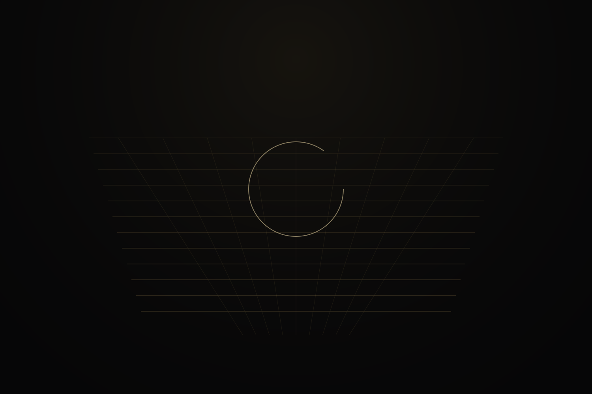
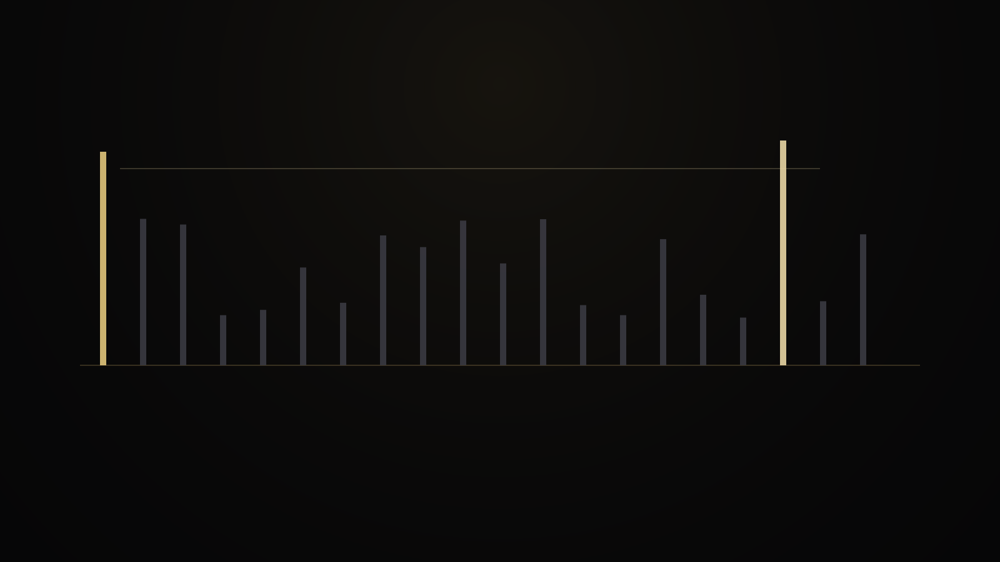
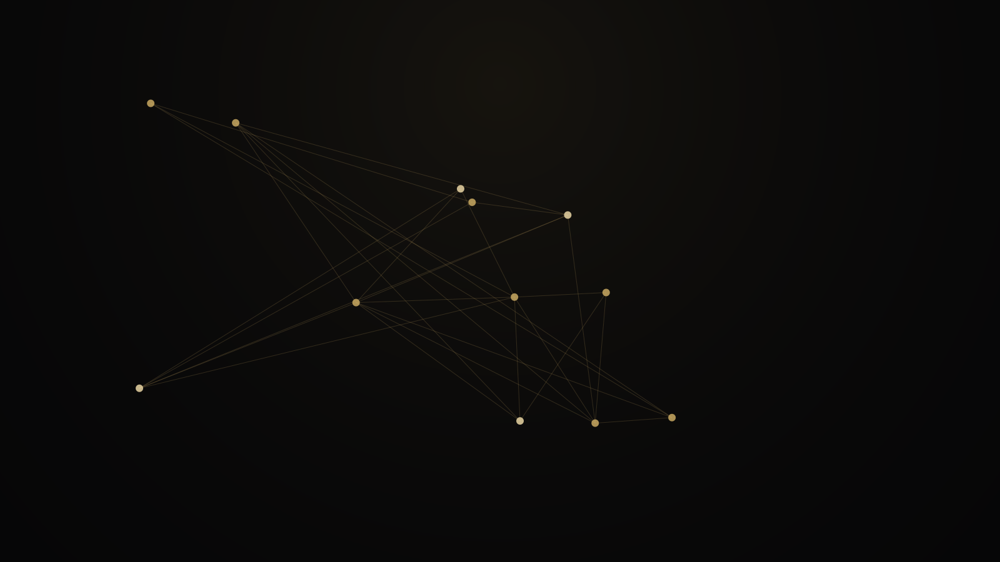
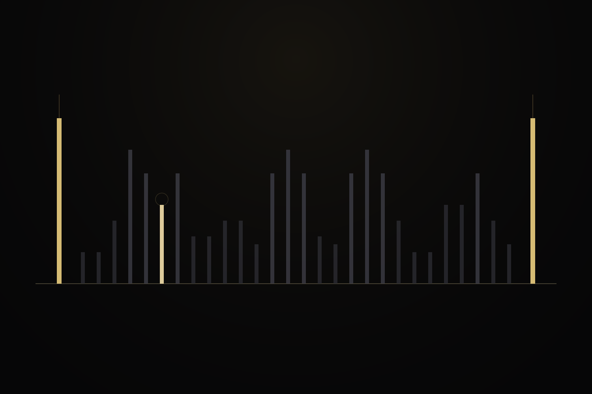
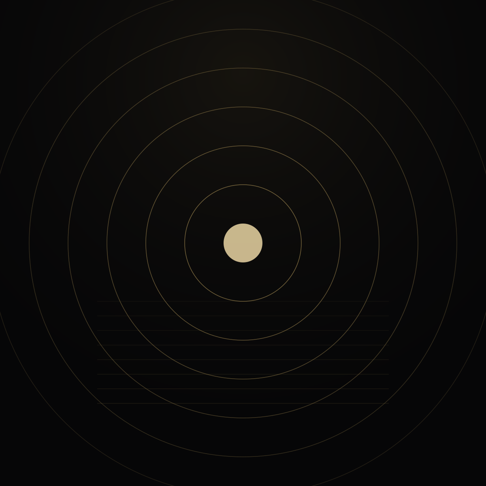

08 · About
Program status map
What is proved, what is implemented, what is measured, and what remains open. A public continuity surface, not a biography.


Proved
Universal local pillars
Direct next-prime rule, interior maximizer, universal bounded compression including Prime-Square Proximity.
Implemented
Minimal PGS Generator v1.1
Production milestone, not the whole active project.
Measured
Generator and walk surfaces
Including 11..1,000,000 full exact output and decade windows through 10^18.
Active research
Cryptology and modulus-link work
Endpoint chains, transport, residual state, certificates on public ladders.
Open / careful
What this program does not claim here
PROOF.md does not itself prove RH. Cryptology ladders are not a universal RSA-scale theorem.





